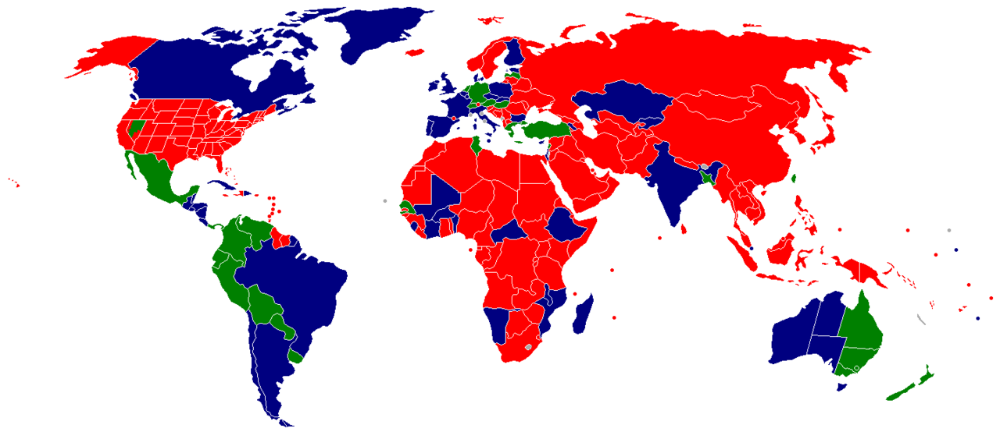

< < < Back
Is Pornography Really That Different From Prostitution? – Return Of Kings
Would you marry a porn star? Or a slut or whore perhaps, who simply fucks on screen?
I don’t mean to imply that men here would or should. But on the internet, it’s surprising to note the rising levels of men who are OK with it ( 61% as per this nsfw link).
“I don’t look at it as sex, I look at it as a guy with his dick in my wife, but they’re working and it’s not emotional. She never orgasms in porn. That’s for us. If it happened on the set, it would be a little weird.”—What If Your Wife Were A Porn Star?

What you see in the above statement is modern male beta hamsterization at its worst. We’ve already explored here why you can’t turn a whore into a housewife. We’ve seen how ex-pornstars have become a source of harm for their children. Now let’s see how prostitution and pornography are essentially the same thing.
What ex porn stars have to say about the nature of the ‘work’
Customer and a prostitute illustrated on an ancient Greek wine cup
Some ex-pornstars have compared working in porn as being a prostitute. Chloe Nicole, a popular porn actress of yesteryears, has said:
“We’re prostitutes . . . There are differences. You can choose your partners, and they’re tested for Aids – you won’t get your john to do that. But we’re prostitutes: we exchange sex for money.“
This came in an article highlighting the realities of the porn industry. There have been debates on the legal line between prostitution and pornography and other questions have been raised:
“Do you want your daughter to grow up to be someone who is compensated financially for the consensual act of sexual intercourse? No tricks here. This is an honest question. In this hypothetical, no one is underaged, on drugs, being exploited or coerced. It’s just a commercial transaction — money for sex acts. Is this what you’d want for your daughter?”
In short, the bottom line is: pornography is cinematic prostitution.
This raises a valid counter question: “Why is prostitution illegal, but pornography is not?”
How big is porn? America has one of the largest pornography industries in the world, but prostitution is legal in only certain states. Porn rules the world in more ways than you can imagine.
Pornography laws across the world:

Green indicates where pornography is legal, yellow indicates where pornography is legal with some restrictions, brown indicates where pornography is illegal, while gray indicates lack of data.
Prostitution laws across the world:

The legality of prostitution and brothels around the world: The green areas are places where prostitution is legal and regulated; the blue areas are regions where prostitution is legal but organized activities such as brothels are illegal; the red countries are places where prostitution is illegal. Gray areas signify lack of data.
The laws on prostitution and pornography thus vary considerably around the world. So the hypocritical demarcation between prostitution and pornography is glaringly obvious especially in countries allowing one and restricting the other, as essentially women engaging in both industries are basically being paid to have sex.
In other words, if you want to be a prostitute to be paid for sex (especially in North America) , it’s rather convenient to become a porn star instead. You’d make money yourself, become a sex celebrity instead of a ‘cheap common prostitute’ and you’d contribute at the same time to the huge porn industry’s income. Pornography is in fact a way of glorifying prostitution and prostitutes – minus the stigma attached to it. You become an ‘adult actress’, a respectable upgrade over the ordinary common prostitute.
At ROK, we’ve spoken about the dangers of porn and how it affects men. We’ve even promoted the use of condoms and safe sex. Ex-pornstars also have spoken about sex addiction, and other horrors within an industry, an industry which has recently spoken out against a mandatory condom use bill recently imposed on porn.
But, shouldn’t safe sex be promoted by an industry whose output is consumed in huge amounts in a country where more than 75% of people will have a HPV infection at some point in their lives?
So why is the bill actually being challenged? Because condom porn ‘doesn’t sell’.
As seen from this article:
“The industry says condom porn doesn’t sell and that requiring prophylactics will only force production underground, where things would be more dangerous for sex workers.
Porn leaders say a twice-a-month testing system for performers works. The business has threatened to take production out of state, although it’s not really clear if that’s happening even as mandatory condom rules cover most of L.A.”
The second argument about testing twice a month doesn’t make sense. A lot of porn stars have lied about their STD status and continued to work in porn, resulting in a lot of deaths of performers. Some recent examples are Mr. Marcus, who doctored his STDs results to continue working, resulting in a syphilis outbreak in the industry in 2012, plus a few others . Some have even tried to book more shoots while hiding their true STD status. Thus, condoms would actually protect performers from such cases where tests are altered. It’s better to be safe than sorry.
Some ex-pornstars have recounted horror stories while working in porn, which has resulted in tortures as well as STDs. Prominent among them is ex-pornographic actress Shelly Lubben, who now campaigns against the porn industry herself. The fact remains that everyone in the porn industry has had some kind of STD at some point in their lives, even with the big names. More reasons why condoms are necessary for the porn industry.
The real reason why the bill is being challenged is the first and only reason: the prospective damage to future sales and consumership of the porn industry due to ‘condom porn’. Porn is all about fulfilling sexual fantasies virtually – right down to the most depraved fantasies you see onscreen. You get the porn of your fetish, unlike in the real world where women who’d fulfill your sexual fantasies could much harder to be found. Not to mention the couples who watch it simply for the appeal of it.
Porn has thus gradually become the source of sexual release for most people throughout the world, thus leading to its consumership as both men and women who masturbate to it, or even learn about sex from it to eventually emulate it in their real lives. The rise of gonzo and POV porn thus seeks to substitute a real but at the same time virtual woman in the front of the viewer.Virtual sex appears as more real than ever. But condoms take away the ‘raw’ real appeal of porn.
So, the POV anal scene where the male performer buttfucks the female with a condom supposedly loses visual (and masturbatory) appeal for the viewer, as to the one which features no protection. The porn makers understand the fantasies of their audience very well, and thus don’t want to lose their consumers due to the ‘plastic’ appeal of condom porn.
How much would this scene sell with condoms? Not much perhaps, according to porn industry estimates…
Not to mention the promotion of unsafe unprotected sex to all those watching it. What about the scene where the guy picks up the chick on the street, takes her to her apartment, and goes straight to raw anal? The immature viewer would then go and fuck around without protection and land up with a STD and eventual hospital bills. Porn thus influences people to become real-life pornstars who could face consequences – social, emotional and physical – out of emulating the risqué porn scenes you see on screen. The fact is that porn has a script and rehearsals; while real life doesn’t. If you fuck up in real life, you will bear the responsibility – sometimes for life ; not the porn which influenced you.
Is porn thus indirectly contributing to the income of the gynecological healthcare industry with increase in STD patients, by influencing people towards unsafe sex? It may be a crazy far-fetched assumption, but the thought then does cross the mind.
Comparatively, prostitution is more responsible when it comes to the promotion of safe sex as compared to pornography.
Feminism’s ambiguous stance on pornography
It’s logical to assume that every man would think feminists would oppose pornography, considering it would ‘demean’ women. But surprisingly, some of them have even spoken out in defense of it, notable being ‘individual feminists’ like Wendy McElroy, thus splitting feminism’s views on the subject. However, sex positive feminism has been trashed by some of the cultural Marxists themselves. Feminists can’t make up their minds after all even when it comes to defending the female gender.
The irony again is the same: why is pornography being overlooked, while prostitution is being demeaned by feminists – who claim to be fighting for women’s dignity and rights? The hypocrisy is so blatant. The prostitute is the culprit, but the porn star isn’t – when essentially both are offering the same service in exchange for money.
The stooping levels of modern male discretion when choosing mates is appalling
With men choosing to wife up whores, sluts and porn stars, the end of men, a fairy tale prophesied by feminists seems even truer. Men are contributing to their own end and destruction of their self respect in the eyes of women by making faulty choices when choosing mates. The levels of sexual thirst among modern men propelled by permissiveness in modern societies, blinds men on how to distinguish between a good woman and a slut. Unless men develop more taste and standards when it comes to choosing the women they want to mate with, the self degradation by women through slutty personal behavior will continue even more, who’d still know there’d be someone to wife them up.
We should keep in mind that the wall is softer than we think for modern women; we’re living in times when there are no consequences for women for their behavior, while men have to face the consequences for both genders. And who is responsible for this paradigm? Complacent, spineless, indulging and thirsty men: who allowed and are allowing the continuation of such paradigms in modern society.
Read More: Is Modern Man Becoming A Sexual Scavenger?


{kind=link}
{kind=link}
{kind=link}
{kind=link}
{kind=link}